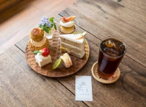
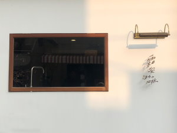
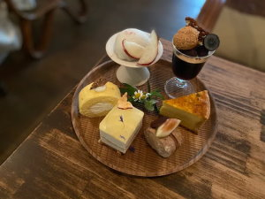
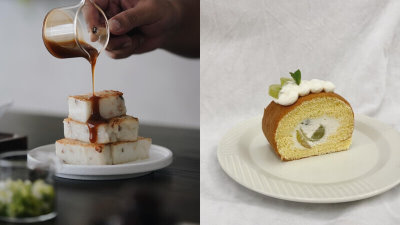

霜空珈琲Shimo sora |
||
《霜空咖啡》是以老診所改建而成，所以大門進來得先穿越一個長長走廊，才能抵達內用區《霜空咖啡》沒有提供訂位服務，電話預約、粉絲團訊息預定都無法訂位唷，一律採取現場候位，如果客滿的話會留電話，等到有空位時會再打給你，不用在現場站著等這點還蠻貼心的有著嘉義最美咖啡廳之稱的《霜空咖啡》，是人氣非常高的IG嘉義美食 但《霜空咖啡》厲害的可不只有老診所改建的日式裝潢而已，霜空點心盤同樣非常厲害，不僅好看更是好吃直接升級成我心中必訪嘉義咖啡廳，推薦愛喝咖啡、愛吃甜點的人，來嘉義一定要去《霜空咖啡》報到！ |
||
 |
 |  |
宅意Jaii Tea |
||
檜意森活村出現餐飲新亮點，在綠茵環繞的T22A木造老屋裡，可以喝精釀啤酒、好咖啡、還有美味的手作酸種麵包可以品嚐，「打貓咖啡」雖然餐飲品項不是特別多，但幾乎每一樣都端出優秀品質。經營高爾夫球桿事業從民雄起家的啟坤科技，因老闆對美酒佳餚有獨特的偏愛與品味，2019年代理澳洲B.V.B精釀啤酒，成立餐飲事業部，並在民雄開了名為「打貓廚房」的美式餐酒館。2023年6月，將餐飲事業觸角伸進嘉義市區，希望分享品牌理念給更多消費者。店內所有咖啡豆都由專業烘豆師代烘，啟坤科技老闆更重金買下高階義式咖啡機，以確保咖啡出杯品質。多數咖啡館都以甜點搭配咖啡茶飲，打貓咖啡想分享不一樣的餐飲文化，推薦大家嚐試用麵包搭配咖啡，或很Chill的來一瓶精釀啤酒，在美好的木都下午，感受最純粹的食物風味。 |
 | |